Герман Чернышёв
Senior Frontend Architect / WebDragon
Огнедышащий frontend-архитектор, превращающий legacy-руины в современные реактивные крепости. Специализируюсь на сложных e-commerce проектах, где важны не только технологии, но и бизнес-результаты.

Скиллы
Проектирую реализацию бизнес-логики, превращая глобальные задачи в чистый, поддерживаемый и масштабируемый код.
Архитектура высоконагруженных приложений
Vue 3/Nuxt 3 • React 18+/Next.js • TypeScript • Node.js • Micro Frontends • Web Components
Производительность и оптимизация
Webpack/Vite • Core Web Vitals 95+ • Lazy Loading • Code Splitting • Bundle Analysis • PWA
Дизайн-системы и UI-киты
Storybook • Design Tokens • Atomic Design • Figma API • Auto-layout
Тестирование и качество кода
Jest/Vitest • Testing Library • ESLint/Prettier
DevOps и процессы разработки
Docker • CI/CD (GitHub Actions/GitLab CI) • Nginx • SSR/SSG
Бизнес-направленная разработка
Технический долг • Миграции legacy • Performance Budget • Web Analytics

Сокровищница
За 5+ лет в 4 компаниях собрал коллекцию из 100+ компонентов, разжёг десятки проектов и поднял Core Web Vitals до 95+ баллов. Мои технологии: React/Next.js, Vue 3/Nuxt 3, TypeScript — мои огненные помощники в создания быстрых и масштабируемых приложений.
- Архитектурные Подвиги (10K+ DAU): Создаю маркетплейсы и корпоративные порталы, которые выдерживают огненное испытание нагрузкой. Моя библиотека компонентов ускоряет разработку на 30% — каждый компонент как зачарованный артефакт, созданный для решения конкретных бизнес-задач.
- Охотник за техническим долгом: Мигрировал 10+ проектов с jQuery на Vue 3/React, освободив команде 20+ часов в неделю. Мой секрет — магия обновления стека без простоев, как по волшебству.
NDA-Дракон | Секретные миссии
- 30+ NDA-проектов: анимированные интерфейсы, event-платформы, e-commerce, аналитика
- Архитектура "под замком": проектировал системы с ограниченным доступом
Ищете опытного frontend-разработчика для создания и оптимизации интерфейсов? Тогда я — веб-дракончик вашей мечты:
- Frontend под ключ: От Figma-макетов до продакшена
- Говорю на языке KPI: Мои оптимизации дают +10-30% к ключевым метрикам
- Командный полёт: Внедрил GitFlow для 10+ devs (мержи без конфликтов, -50% времени)
- Код-ревью как искусство: 20+ ревью/мес → -40% багов в продакшене